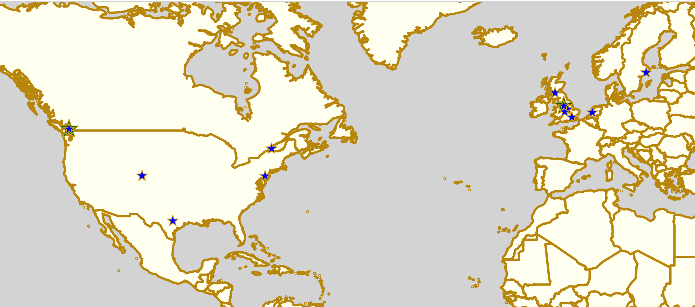

Derby Stance 2018: Rule56's Coaching Summit returns, now International!
Two years ago, we reported on the first Derby Stance event: the UK's first ever "Coaching Summit", organised by North of England based coaching team Rule 56. Over a weekend of sessions from speakers across the UK (and one from the USA), the Roller Derby coaching community didn't just learn from each other, but also built some strong bridges and enthusiasm for pushing Coaching further in the sport.
In the year and a bit since that big launch, Rule 56 have been continuing to develop coaching resources. With the aid of teleconferencing technology, they successfully provided a very effective short series of coaching webinars with Strong Athletic's Smarty Pants (as we reported on too), with attendees from across Europe and the Americas. They've also been running physical bootcamp sessions for skaters, like the upcoming "bite-sized" bootcamp on Working in Walls on August 11th...
However, whilst there was a second Derby Stance summit in February (taking advantage of the Roller Derby World Cup the weekend before to bring all those international skaters to one place), organising truly large-scale international coaching events has always been difficult, especially with our grass-roots amateur sport.
Until now! This winter, Rule56 are bringing together all the things they've learnt to make the third Derby Stance a simultaneously larger, more international... and more accessible event - by moving it entirely online!

Derby Stance Online will be a 4 day virtual event, running from 29 November to 2 December this year. Just like a physical event, there will be many different sessions to sign up with, grouped into 5 themes:
- Just Start Coaching [5 sessions]
- Strategic Coaching [4 sessions]
- Mental Performance [5 sessions]
- Game Day [3 sessions]
- Juniors [3 sessions]
Each of the 23 sessions will be available as a separate webinar, and can be signed up for (and paid for) independently of any others; of course, you can also sign up for the entire summit, as if it were a "physical" meeting as well, if you want. The flexibility of being able to pick and choose just the sessions you want, however, is a big advantage of the online-only format.
As with other webinars, the entire session will also be available to rewatch after the fact - so, even if your timezone makes it hard to attend the session live (or if you want to review a session later), you can still access all that coaching expertise, at your own convenience.
The other advantage of the online-only format is that it's immensely easier to pull together expert speakers and session leaders from across the entire globe. Rule 56 has managed to collect 14 of the best coaches in Roller Derby, and beyond, to contribute sessions to this event:
Smarty Pants (Strong Athletic), Vivien Leigh-thal (Rainy City Roller Derby), Booty Quake (Roller Derby Athletics), Maurine Filip (Stockholm Roller Derby), Rosie Peacock (Glasgow Men's Roller Derby, Team Scotland Coach 2018), Devoida Mercy (Philly Roller Derby), Maha El Nasser (Rule 56), Papa Whisky (Boulder County Bombers), Jess Paternostro (Team Canada Roller Derby), Furrrocious (Amsterdam Roller Derby) Ballistic Whistle (Southern Discomfort), Louise Capicotto (Sport Psychology Consultant), Luludemon (Terminal City Rollergirls), and Treblemaker 909 (Central City Roller Derby) are each contributing at least one session to the schedule (and some up to three).
You can reserve tickets - for individual webinars, or the whole event - (and learn more about the summit) at the official website here: http://www.rulefiftysix.com/derby-stance-online from August 1st.